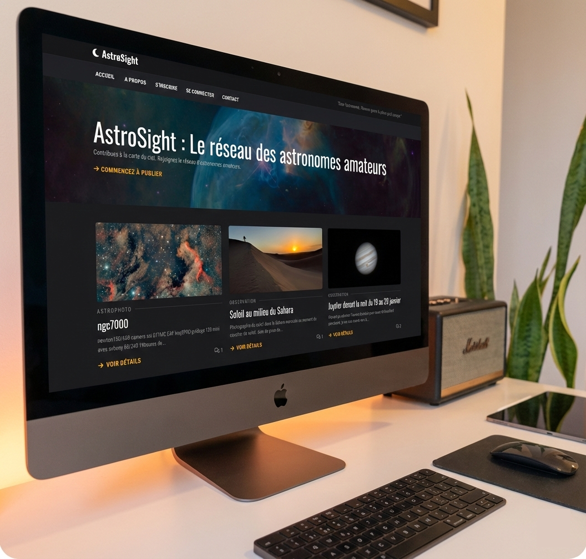

// En recherche de stage
Développeur Back-End passionné par la conception d'architectures
robustes, je m'attache à créer des solutions techniques performantes
et évolutives.
Spécialisé dans l'écosystème PHP, je maîtrise les fondamentaux de la
programmation orientée objet et du modèle MVC. Je recherche
aujourd'hui un stage formateur pour transposer mes bases solides en
développement natif vers des environnements de production utilisant
des frameworks tels que Laravel ou Symfony. Doté d'un esprit
d'analyse, je suis prêt à relever des défis techniques sur n'importe
quel écosystème Back-End.
Actuellement à la recherche d'une immersion professionnelle pour mettre à profit mes compétences en architecture logicielle (PHP/OOP/SQL) et contribuer à des projets concrets au sein d'une équipe technique.
AstroSight | Blog communautaire
Conception et développement d'une plateforme dédiée à
l'astrophotographie. Mise en place d'un système de gestion de
contenu dynamique et interaction utilisateur.
CMS sur-mesure | Site vitrine (Secteur Juridique)
Développement intégral d'un système de gestion de contenu
(CMS) "from scratch" pour une avocate. L'objectif : offrir une
interface d'administration simplifiée pour une autonomie totale
sur le contenu éditorial et la gestion des services.
Cursus de deux ans en alternance focalisé sur la logique algorithmique et le développement robuste. Expertise ciblée sur l'écosystème PHP et Java, avec une forte composante en architecture de données.
Fort d'une première carrière dans le secteur social, j'ai choisi de professionnaliser ma passion pour la programmation en privilégiant une approche structurée. Au-delà de la syntaxe des langages, je me concentre sur la compréhension profonde de l'algorithmique et de la gestion des données. Ce virage méthodique, soutenu par un aménagement de mon temps de travail, témoigne de ma détermination à construire des fondations techniques rigoureuses.
Mon parcours a débuté dans l'humain, où j'ai appris l'analyse de situations complexes et la gestion de projets en tant qu'éducateur spécialisé. Aujourd'hui, je transpose cette capacité d'analyse dans le monde du développement web.
Mon approche du développement se concentre sur la qualité du code, les bonnes pratiques et la documentation. Je suis particulièrement intéressé par les architectures structurées (MVC, POO), l'optimisation des performances et la sécurité.
Mon objectif à présent est d'intégrer une équipe qui me permettra d'apporter mes compétences et de contribuer à des projets robustes.
Mes atouts: autonomie, patience, persévérance, curiosité, esprit analytique.

Conception d'un blog participatif dédié à l'astronomie et l'astrophotographie amateur.
Architecture : Refactorisation complète en cours vers une structure 100% MVC via un framework propriétaire développé "from scratch".
Gestion des données : Système CRUD complet, back-office d'administration et suivi rigoureux du cycle de vie des variables.
Interactivité : Authentification sécurisée, espace communautaire et module de gestion des médias.
Présence numérique via un site vitrine et développement intégral d'un système de gestion de contenu CMS "from scratch" pour une avocate. L'objectif est d'offrir une interface d'administration simplifiée pour une autonomie totale sur le contenu éditorial et la gestion des services.
Je suis actuellement à la recherche d'un stage en développement backend/fullstack. N'hésitez pas à me contacter pour discuter d'opportunités ou simplement échanger !